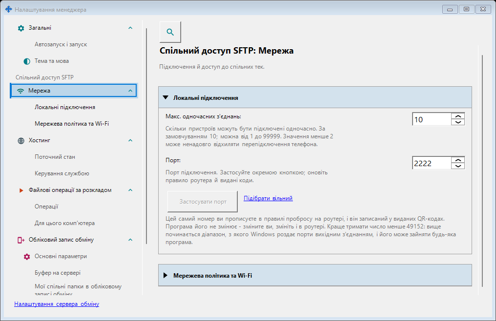
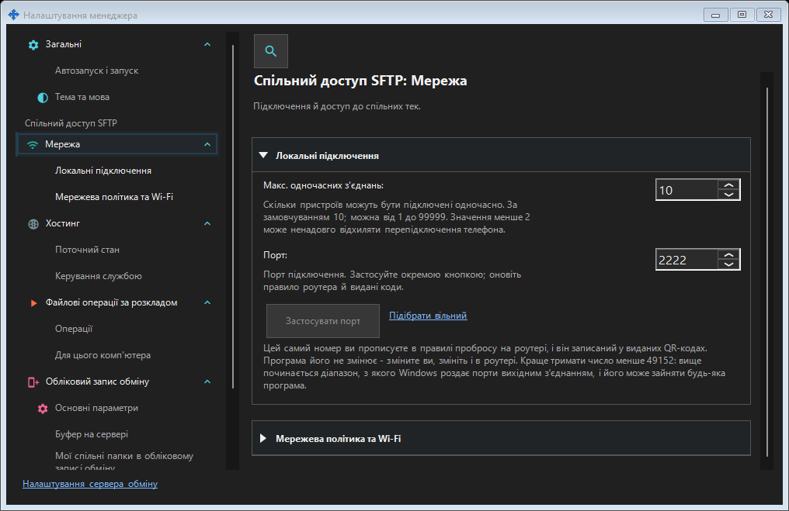

Налаштування спільного доступу SFTP
Призначення
Тут знаходяться порт SFTP, обмеження підключень, режим лише локальної мережі та робота в сеансі користувача або службою Windows. Вони стосуються спільного доступу до папок і не змінюють порт сервера обміну чи віддалений обліковий запис.


Порядок дій
Відкрийте налаштування менеджера з його вікна або трея й виберіть групу «Спільний доступ SFTP» (сторінки «Мережа» та «Хостинг»). Вимкнені функції вмикаються лише явним підтвердженням із запитом прав адміністратора. Відкриття вікна нічого не вмикає й не запускає. Введіть порт і застосуйте; перехід між вікнами зберігає чернетку. Поки чернетку порту не застосовано, під час закриття питається: Так застосовує, Ні відкидає, Скасувати продовжує редагування. Помилка зберігає чернетку. Після зміни робочого порту оновіть коди й перенаправлення на роутері.
Елементи вікна
Налаштування спільного доступу SFTP
Тут знаходяться порт SFTP, обмеження підключень, режим лише локальної мережі та робота в сеансі користувача або службою Windows. Вони стосуються спільного доступу до папок і не змінюють порт сервера обміну чи віддалений обліковий запис. Відкрийте налаштування менеджера з його вікна або трея й виберіть групу «Спільний доступ SFTP» (сторінки «Мережа» та «Хостинг»). Вимкнені функції вмикаються лише явним підтвердженням із запитом прав адміністратора. Відкриття вікна нічого не вмикає й не запускає. Введіть порт і застосуйте; перехід між вікнами зберігає чернетку. Поки чернетку порту не застосовано, під час закриття питається: Так застосовує, Ні відкидає, Скасувати продовжує редагування. Помилка зберігає чернетку. Після зміни робочого порту оновіть коди й перенаправлення на роутері.
Налаштування спільного доступу SFTP
Тут знаходяться порт SFTP, обмеження підключень, режим лише локальної мережі та робота в сеансі користувача або службою Windows. Вони стосуються спільного доступу до папок і не змінюють порт сервера обміну чи віддалений обліковий запис. Відкрийте налаштування менеджера з його вікна або трея й виберіть групу «Спільний доступ SFTP» (сторінки «Мережа» та «Хостинг»). Вимкнені функції вмикаються лише явним підтвердженням із запитом прав адміністратора. Відкриття вікна нічого не вмикає й не запускає. Введіть порт і застосуйте; перехід між вікнами зберігає чернетку. Поки чернетку порту не застосовано, під час закриття питається: Так застосовує, Ні відкидає, Скасувати продовжує редагування. Помилка зберігає чернетку. Після зміни робочого порту оновіть коди й перенаправлення на роутері.
Налаштування менеджера · Налаштування спільного доступу SFTP · Налаштування сервера обміну